A mirror, a still lake and a butterfly all show the same shape flipped over. Today we find exactly where each point of a reflection lands, and name the mirror line.
By the end you’ll know…
A reflection is specified by a mirror line, and every point of the image is the same perpendicular distance from that line as its object point, on the opposite side.
A point on the mirror line does not move.
Mirror lines are given as equations such as x = 1, y = 2, y = x and y = -x.
A reflection preserves length and angle, so the image is congruent to the object, but the sense is reversed.
By the end you can
G3Reflect a shape in a given mirror line, including the lines y = x and y = -x.
G4Construct and state the equation of the mirror line, given a shape and its image.
Work down the page at your own pace. Write every answer in your book first, then click to check it.
01
Do Now
About 5 minutes
1
Write down the equation of the vertical line through (3, 5).
x = 3
2
Write down the equation of the horizontal line through (3, 5).
y = 5
3
Find the point halfway between (1, 2) and (1, 8).
(1, 5)
4
Reflect the point (5, 1) in the line x = 3.
(1, 1)
Remember these?
LAST LESSONTranslate the point (4, -1) by -63.
(-2, 2)
LAST WEEKDoes 720terminate or recur?
20 = 2 × 2 × 5 has no prime factor but 2 and 5, so it terminates: 0.35
LAST TERM£60 is shared in the ratio 2 : 3. How much is the larger share?
60 ÷ 5 = 12 3 × 12 = £36
LAST YEARAn L-shape is a 6 cm by 4 cm rectangle with a 2 cm by 2 cm square cut from one corner. Find its area.
24 - 4 = 20 cm²
02
Learn
Read each card, then follow the worked examples one step at a time.
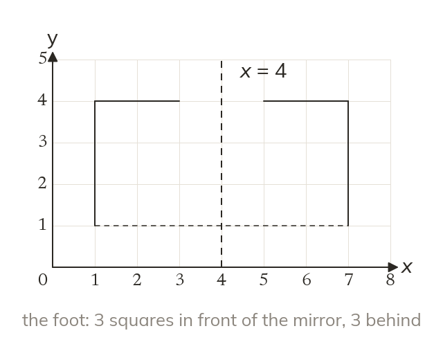
The same distance on the other side
Each point lands the same distance from the mirror, on the other side. Measure at right angles to the mirror line. The image faces the other way.
In a reflection every point lands the same distance from the mirror line, on the other side, measured at right angles. A point on the mirror line does not move, and the image faces the other way.
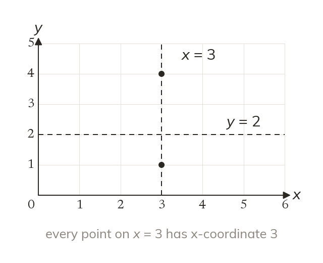
Naming a mirror line
A vertical line is x = a number. Every point on it has that x-coordinate. A horizontal line is y = a number.
A vertical line is x = a number, because every point on it has that x-coordinate. A horizontal line is y = a number.
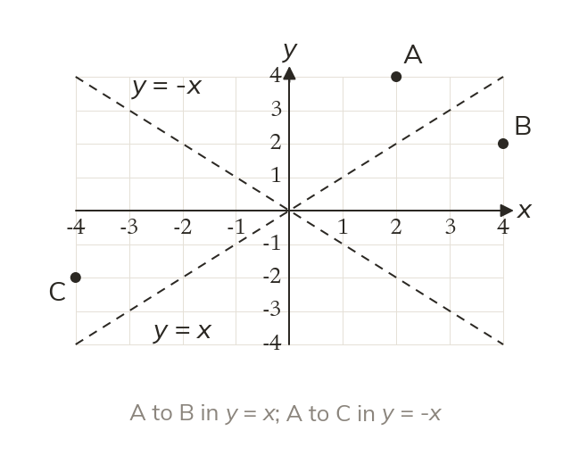
The lines y = x and y = -x
Reflecting in y = x swaps the coordinates: (2, 4) goes to (4, 2). Reflecting in y = -x swaps them and changes both signs.
Reflecting in y = x swaps a point's two coordinates, so (2, 4) goes to (4, 2). Reflecting in y = -x swaps them and changes both signs, so (2, 4) goes to (-4, -2).
WORKED EXAMPLE A
In the line x = 3, reflect the flag.
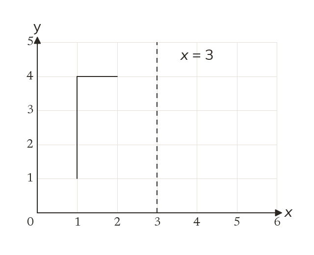
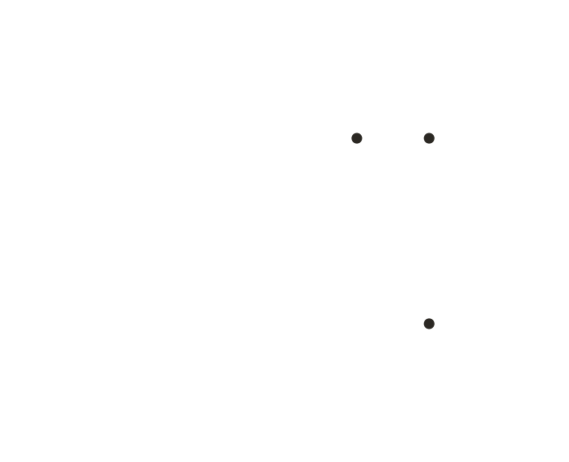
Mirrorthe vertical line through 3 on the x-axis
Distancesthe foot is 2 left of the mirror, so its image is 2 right, at (5, 1)
Imagefoot (5, 1), top (5, 4), end of the flag (4, 4)
WORKED EXAMPLE B
Reflect the flag in the line y = x.
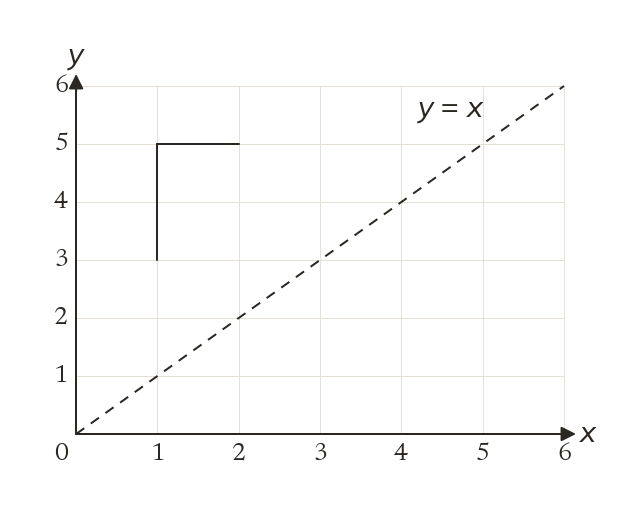
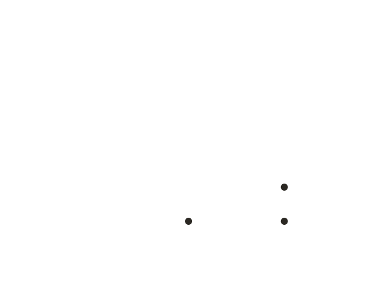
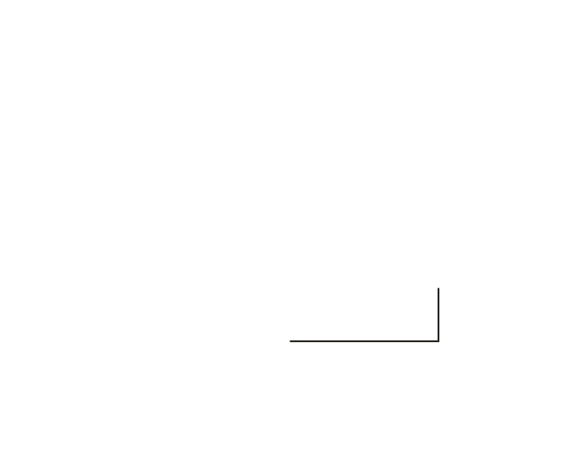
Rulereflecting in y = x swaps each point's coordinates
Points(1, 3) to (3, 1), (1, 5) to (5, 1), (2, 5) to (5, 2)
Checkthe image lies on its side below the mirror, facing the other way
YOUR TURN · a
Reflect the point (7, 2) in the line x = 5.
(3, 2)
YOUR TURN · b
Reflect the point (4, -1) in the line y = -x.
(1, -4)
03
Check your understanding
Pick an answer. If it's wrong, the feedback tells you which mistake it was.
Reflect the point (2, 5) in the line y = 3.
Yes.(2, 5) is 2 above y = 3, so the image is 2 below it: (2, 1).
Not quite.y = 3 is a horizontal line, so the point moves up or down, not across.
Not quite. Reflect in y = 3, not the x-axis. 5 is 2 above, so go 2 below.
Not quite.5 is 2 above the line, so the image is 2 below it: y = 1.
Reflect the point (1, 4) in the line y = x.
Not quite. Reflecting in y = x swaps the coordinates: (4, 1).
Not quite. Swapping and changing both signs is y = −x. For y = x, just swap: (4, 1).
Yes. Reflecting in y = x swaps the coordinates: (1, 4) becomes (4, 1).
Not quite. Reflect in y = x, not the x-axis. Swap the coordinates.
Reflect the point (-2, 3) in the line x = 1.
Not quite.x = 1 is a vertical line, so the point moves across, not up or down.
Not quite. Reflect in x = 1, not the y-axis. −2 is 3 left of it, so go 3 right.
Yes.−2 is 3 left of x = 1, so the image is 3 right of it: x = 4.
Not quite. Measure from the mirror line: −2 is 3 left of x = 1, so go to 4.
04
Practise
mark as you go
Checkpoint. Draw the line x = 2 on a grid. Reflect the triangle with corners (3, 1), (5, 1) and (3, 4) in it, and write down the corners of the image.Show your teacher before you go on
Reflect the triangle in the line x = 3. Write down the corners of the image.
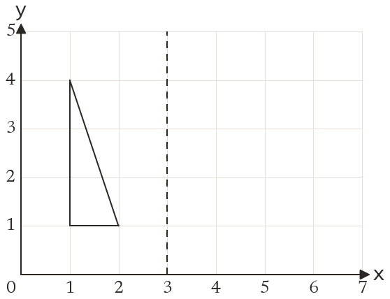
(5, 1), (4, 1) and (5, 4)
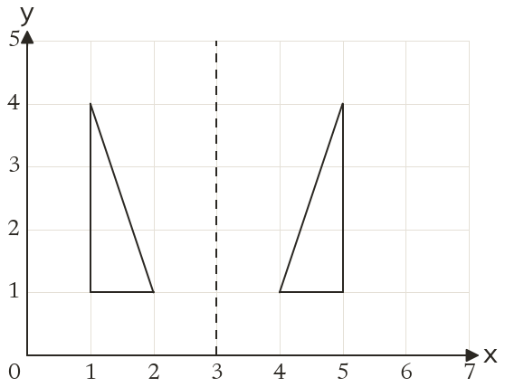
2
Reflect the triangle in the line y = x. Write down the corners of the image.
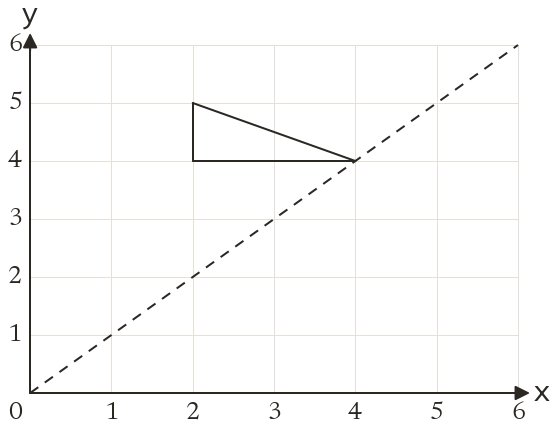
Swap each pair: (4, 2), (4, 4) and (5, 2)
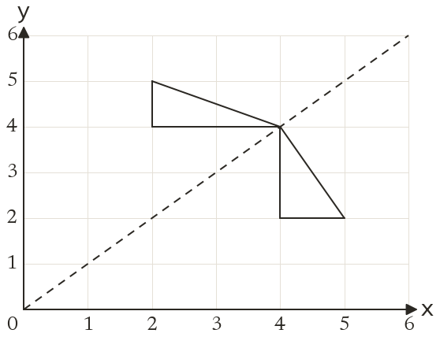
3
Reflect the point (6, 1) in the line x = 4.
2 right of the line, so 2 left: (2, 1)
4
Reflect the point (3, 5) in the line y = 2.
3 above the line, so 3 below: (3, -1)
5
Reflect the point (2, -5) in the line y = x.
Swap the coordinates: (-5, 2)
EXT
The point (a, b) is reflected in the line x = 2 and lands on (7, 5). Find a and b.
(7, 5) is 5 right of x = 2, so (a, b) is 5 left a = 2 - 5 = -3 and b = 5
05
Learn
Read each card, then follow the worked examples one step at a time.
The mirror is halfway
The mirror line is halfway between each point and its image. Join one matching pair and find its midpoint.
The mirror line is halfway between every point and its image, at right angles to the line joining them. Join one matching pair and find the point halfway along.
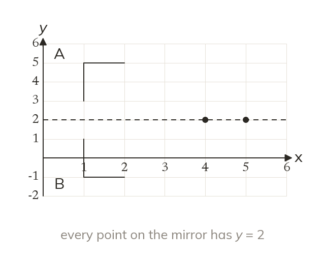
Name it by its equation
Read the points on the mirror line. If they share a y-coordinate, the mirror is y = that number. If they share an x-coordinate, it is x = that number.
Read the points on the mirror line. If they all share a y-coordinate the mirror is y = that number; if they share an x-coordinate it is x = that number.
WORKED EXAMPLE C
Find the mirror line that maps flag A onto B. Join the foot of A, (1, 1), to the foot of B, (7, 1). Halfway along is (4, 1), and the mirror is vertical through it.
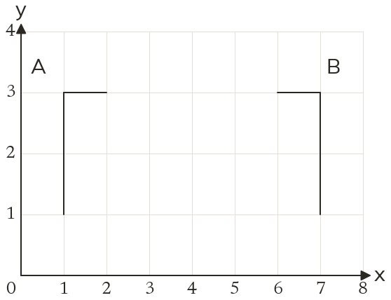
Mirror linex = 4
WORKED EXAMPLE D
Find the mirror line that maps flag A onto B. The foot (1, 2) goes to (-2, -1) and the top (1, 4) goes to (-4, -1). Each pair swaps its coordinates and changes both signs, which is the rule for y = -x.
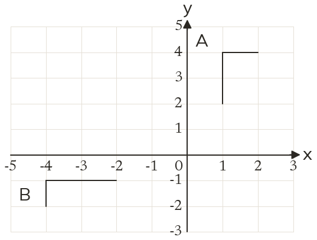
Mirror liney = -x
YOUR TURN · c
The point (2, 6) is reflected onto (2, 0). Find the equation of the mirror line.
y = 3
YOUR TURN · d
The point (1, 5) is reflected onto (5, 1). Find the equation of the mirror line.
y = x
06
Check your understanding
Pick an answer. If it's wrong, the feedback tells you which mistake it was.
The point (2, 3) is reflected onto (8, 3). What is the mirror line?
Not quite. Only x changed, so the mirror is a vertical line, x = something.
Not quite. The mirror is halfway between 2 and 8: x = 5.
Yes. Halfway between x = 2 and x = 8 is x = 5.
Not quite. A line needs an equation. It's vertical, so x = 5.
Flag A's foot is at (4, 9) and its reflection, flag B, has its foot at (4, -1). What is the mirror line?
Yes. Halfway between y = 9 and y = −1 is y = 4.
Not quite. Only y changed, so the mirror is a horizontal line, y = something.
Not quite. Halfway is the middle value: (9 + (−1)) ÷ 2 = 4.
Not quite. The mirror sits halfway between the flags, not through one.
Reflect the point (3, -1) in the line y = -x.
Not quite. For y = −x, swap and change both signs: (1, −3).
Not quite. Swap the coordinates as well: (3, −1) goes to (1, −3).
Not quite. Reflect in y = −x, not an axis. Swap and change both signs.
Yes. For y = −x, swap and change both signs: (3, −1) goes to (1, −3).
07
Practise
mark as you go
Checkpoint. Flag A has its foot at (3, 1), top at (3, 4) and end at (4, 4). Flag B has its foot at (9, 1), top at (9, 4) and end at (8, 4). Draw the mirror line and write down its equation.Show your teacher before you go on
1
The point (1, 5) is reflected onto (9, 5). Find the equation of the mirror line.
Halfway between 1 and 9 is 5: x = 5
2
The point (3, 7) is reflected onto (3, -3). Find the equation of the mirror line.
Halfway between 7 and -3 is 2: y = 2
3
The point (-4, 2) is reflected onto (8, 2). Find the equation of the mirror line.
(-4 + 8) ÷ 2 = 2: x = 2
4
The point (2, 6) is reflected onto (6, 2). Find the equation of the mirror line.
The coordinates swap: y = x
5
The point (5, -1) is reflected onto (1, -5). Find the equation of the mirror line.
The coordinates swap and both signs change: y = -x
EXT
(a, 3) is reflected in x = 5 onto (11, 3), and (4, b) is reflected in y = -1 onto (4, -6). Find a and b.
11 is 6 right of 5, so a = 5 - 6 = -1 -6 is 5 below -1, so b = -1 + 5 = 4
08
Exit ticket
On paper, on your own, then check
1
What happens to a point that lies on the mirror line?
It does not move.
2
Reflect the point (-2, 5) in the line y = x.
(5, -2)
3
The point (-3, 2) is reflected onto (5, 2). Write down the equation of the mirror line.
x = 1
Finished? Next lesson: 10.14.3 Rotating About a Point.
Practise more
After the lesson, or whenever you want more
Dr Frost
Log in, then search for a code to practise that skill.
153bReflect a shape in a vertical or horizontal line drawn on axes.
153cReflect a shape in a diagonal line drawn on axes.
279aDescribe a reflection in a vertical or horizontal line on a set of axes.